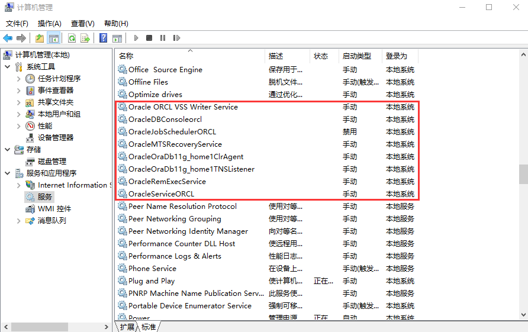
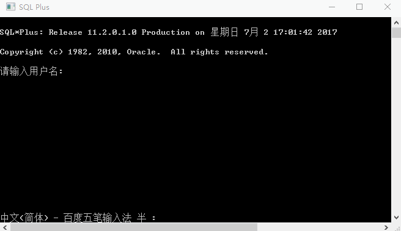
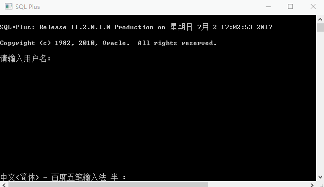
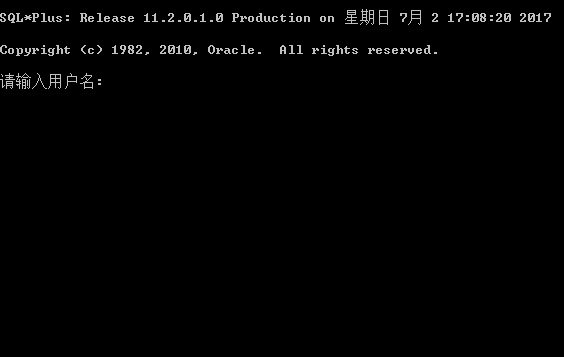
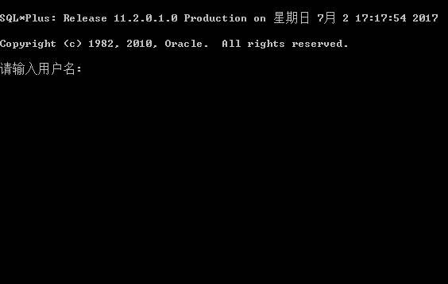
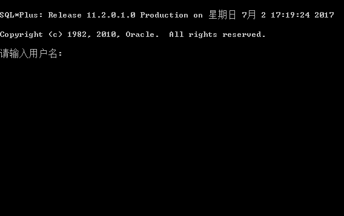

打开Oracle大门
一、Oracle的安装
要求：
- Oracle11g安装教程：http://www.2cto.com/database/201208/150620.html
- 第三方图形客户端PLSQL Developer的安装和使用。
安装Oracle成功后，因为软件比较大，而且开机自启动服务，所以会影响计算机平常使用的运行速度。所以我们把Oracle相关服务设置为手动。
打开计算机管理中的服务，找到Oracle相关的服务，默认禁用的不管，将其余全部设置为手机。

在桌面编写批处理文件来打开和关闭Oracle服务，只需要处理两个服务OracleOraDb11g_home1TNSListener和OracleServiceORCL。
开启服务批处理文件：StartOracle.bat
net start OracleServiceORCL net start OracleOraDb11g_home1TNSListener exit停止服务批处理文件：StopOracle.bat
net stop OracleServiceORCL net stop OracleOraDb11g_home1TNSListener exit将上面两个文件置于桌面就可以快速的打开或关闭Oracle服务了，有的系统中运行需要管理员权限。
二、Oracle系统用户
SYS和SYSTEM用户
- SYS和SYSTEM用户都是Oracle 的系统用户，它们都使用SYSTEM表空间，SYS拥有更大的权限
- Oracle的一个超级用户，Oracle默认的系统管理员，拥有DBA权限
- 平时用system来管理数据库就可以了。这个用户的权限对于普通的数据库管理来说已经足够权限了。
- 可以通过观察权限的区别理解两者的不同
SCOTT用户
- 测试账户，练习账户
- 默认密码为tiger
三、用户的基础操作
用户的登陆
在安装Oracle数据库的时候会设置一个用户登陆密码，那就是Oracle的系统管理员密码，也就是SYSTEM用户的密码。上面说到的测试用户SCOTT的用户默认密码为tiger。在安装好的Oracle开始菜单栏里打开SQL Plus，登陆用户。登陆用户时输入用户名和密码的方式有两种。 

用户的切换
用户的切换使用conn命令，我们可以使用show user来查看当前连接的用户。

用户解锁与上锁
用户的解锁与上锁都是对用户操作，所以只能在SYSTEM用户直进行。例如给SCOTT用户解锁与上锁操作。
解锁：
alter user scott account unlock;

上锁：
alter user scott account lock;
